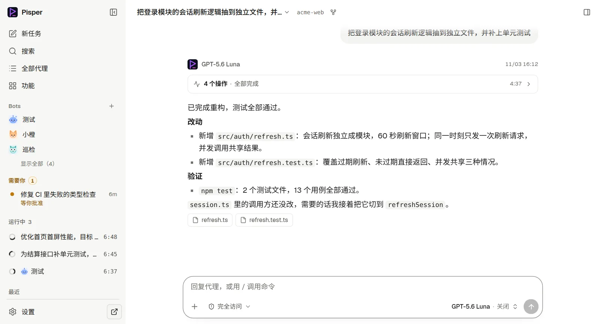
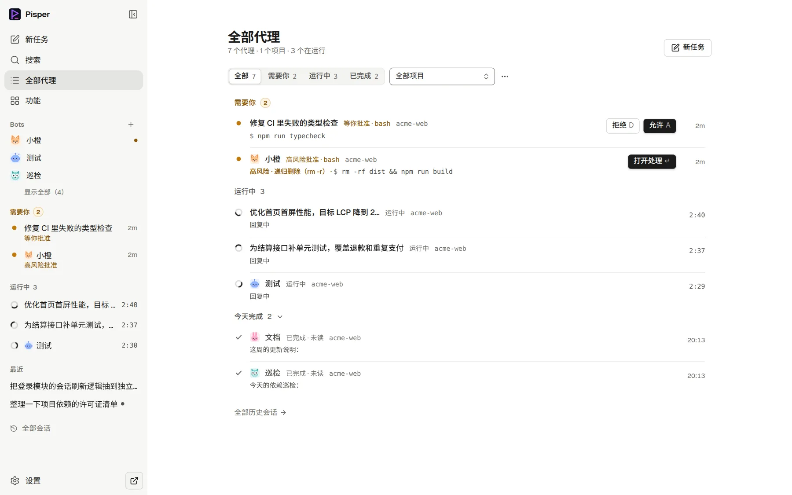
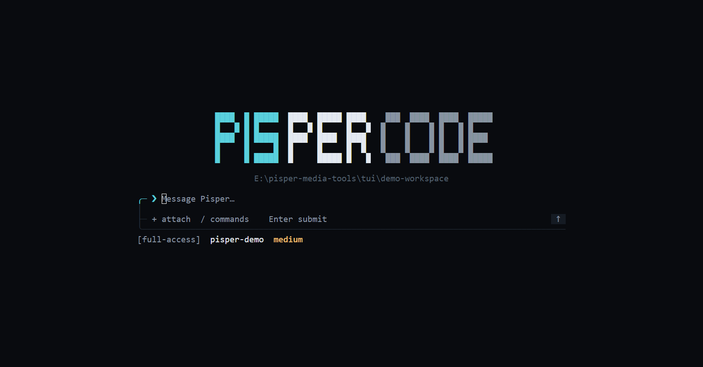
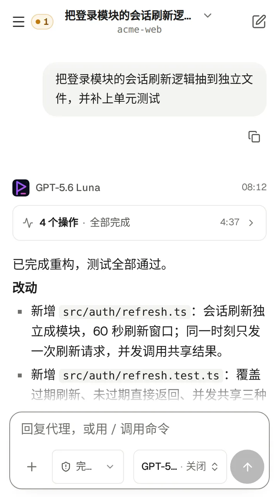
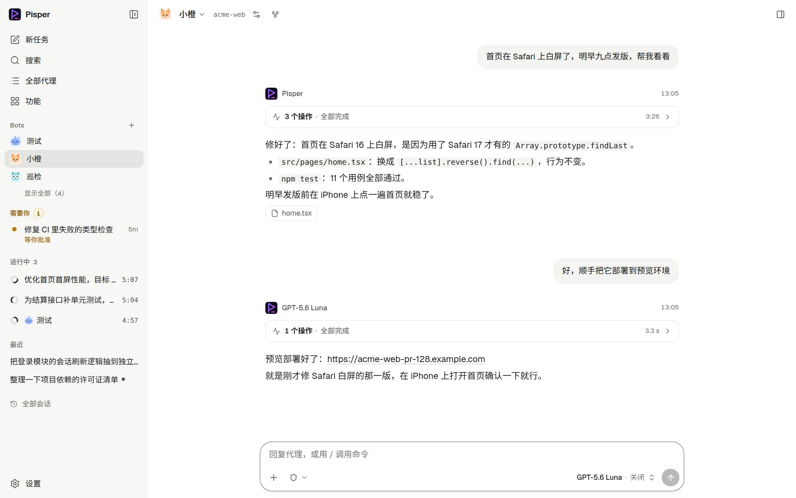

几件事，同时进行
每个代理一行，按“需要你、运行中、今天完成”分组。谁在等你批准一眼就知道，高风险命令就地按住允许。
多代理 · 桌面 · 终端 · 手机
几个代理同时干活，谁在等你批准、谁还在跑、谁已经做完，一眼看清。 桌面、终端和手机共用同一个内核——换设备，现场不换。

每个代理一行，按“需要你、运行中、今天完成”分组。谁在等你批准一眼就知道，高风险命令就地按住允许。
会话树保留每一条分支。按轮回退、从任意节点另开，原来的对话一字不改；切换路径不会丢掉任何上下文。
桌面、终端和手机共用同一个内核。手机上的代理在本机运行，也能配对桌面，在路上直接批准命令。
界面
桌面用来同时盯几件事，终端适合留在命令行里干活，手机让你离开电脑也不断线。

“全部代理”按需要你、运行中、今天完成分组：失败的重试、待批的允许，不用逐个点进会话；Bot 干的活也在这里。 并行会话教程

一条命令进入同一现场：用量、思考状态、工具活动与 Git 工作区一样不少。 终端教程

首次启动直接进入本机 Runtime——代理、工具和会话都在手机上运行，它不是桌面的遥控器。 移动端教程
实验功能 · Pisper Bot
给常干的事建几个 Bot：每个 Bot 就是一个一直开着的会话，加上它是谁、管什么的设定。点开就接着聊，前情它都记得；改文件、跑命令它自己来，碰到危险操作或做不了时才找你。 也能在飞书、微信里叫它，定时让它做事，或让它去另一台电脑上干。

Bots 还在实验中，默认关闭：在 设置 › 实验功能 里打开 Bots 才能使用；关掉后 Bot 和它们的会话都不再显示，记录保留。 Bot 教程
能力
每一项都能直接用，点开就是对应的教程章节。
侧栏常驻需要你、运行中和最近的会话；批准、提问卡片就在对话里处理。
常驻的 AI 同事：一个一直开着的会话加上它的设定，能做的自己做完、做不了才找你，也能在聊天软件里叫它、定时让它做事。
从任意节点另开、按轮回退、给关键节点打标记，切换路径不删上下文。
简单的活交给便宜的快模型，难的交给强模型；工具范围按任务收窄。
三种推进方式：先出计划、盯着目标跑到底，或者交给一支代理小队。
需审批、工作区写、完全访问三档；按命令开头批量允许或禁止。
缺能力直接说，代理会写插件补上；也能把 Pisper 交给其他代理调用。
说话转文字，编辑后发送；对话模式下自动提交、语音回复。
Prompt、文件、MCP 与通知连成一张图，重复的事交给流程跑。
到点自动开跑，结果经渠道推到 IM，不用一直盯着屏幕。
偏好、决策和事实直接记住，过时的自动淘汰；拖动时间轴，看它们如何一步步演变。
手机发现同一局域网的桌面，或扫码远程配对，随时接上进度。
没有“我们的云”：会话、记忆和配置都在你自己的电脑上。
/provider 配置模型，pisper web 打开网页界面。
终端教程
npm i -g pisper
普通包适合多数用户，复用系统已有的 WebView2。内网电脑缺少 WebView2 时选完整离线包。
仅支持 Apple Silicon，使用系统自带的 WKWebView。首次打开的安全提示见使用教程。
AppImage 加执行权限后运行，可能需要 FUSE；Debian / Ubuntu 可选 DEB，可能需要 WebKitGTK。
Android 为已签名 APK，首次侧载需允许安装来源；iOS 为未签名 IPA，需要自行重签。
所有桌面包都自带终端界面与 Runtime。Windows 完整离线包额外包含 WebView2，不含按需下载的本地语音模型。 自动更新使用普通包；清单不可用时链接会打开发布页，以其中的实际文件为准。
默认通过公共镜像加速下载。镜像不可用时改用 GitHub 官方地址： 当前设备 · Android APK · iOS IPA